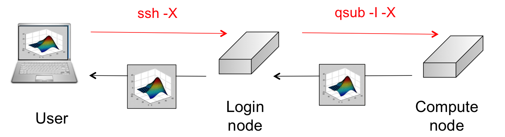
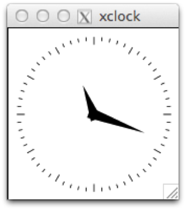
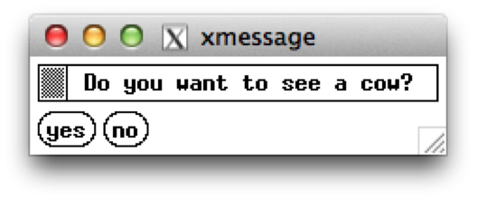

Running interactive jobs#
Introduction#
Interactive jobs are jobs which give you an interactive session on one of the compute nodes. Importantly, accessing the compute nodes this way means that the job control system guarantees the resources that you have asked for.
Interactive PBS jobs are similar to non-interactive PBS jobs in that they are submitted to PBS via the command qsub. Where an interactive job differs is that it does not require a job script, the required PBS directives can be specified on the command line.
Interactive jobs can be useful to debug certain job scripts or programs, but should not be the main use of the HPC-UGent infrastructure. Waiting for user input takes a very long time in the life of a CPU and does not make efficient usage of the computing resources.
The syntax for qsub for submitting an interactive PBS job is:
$ qsub -I <... pbs directives ...>
Interactive jobs, without X support#
Tip
Find the code in "~/examples/Running_interactive_jobs"
First of all, in order to know on which computer you're working, enter:
$ hostname -f
gligar07.gastly.os
This means that you're now working on the login node gligar07.gastly.os of the cluster.
The most basic way to start an interactive job is the following:
$ qsub -I
qsub: waiting for job 123456 to start
qsub: job 123456 ready
There are two things of note here.
-
The "qsub" command (with the interactive -I flag) waits until a node is assigned to your interactive session, connects to the compute node and shows you the terminal prompt on that node.
-
You'll see that your directory structure of your home directory has remained the same. Your home directory is actually located on a shared storage system. This means that the exact same directory is available on all login nodes and all compute nodes on all clusters.
In order to know on which compute-node you're working, enter again:
$ hostname -f
node3501.doduo.gent.vsc
Note that we are now working on the compute-node called "node3501.doduo.gent.vsc". This is the compute node, which was assigned to us by the scheduler after issuing the "qsub -I" command.
Now, go to the directory of our second interactive example and run the program "primes.py". This program will ask you for an upper limit ($> 1$) and will print all the primes between 1 and your upper limit:
$ cd ~/examples/Running_interactive_jobs
$ ./primes.py
This program calculates all primes between 1 and your upper limit.
Enter your upper limit (>1): 50
Start Time: 2013-09-11 15:49:06
[Prime#1] = 1
[Prime#2] = 2
[Prime#3] = 3
[Prime#4] = 5
[Prime#5] = 7
[Prime#6] = 11
[Prime#7] = 13
[Prime#8] = 17
[Prime#9] = 19
[Prime#10] = 23
[Prime#11] = 29
[Prime#12] = 31
[Prime#13] = 37
[Prime#14] = 41
[Prime#15] = 43
[Prime#16] = 47
End Time: 2013-09-11 15:49:06
Duration: 0 seconds.
You can exit the interactive session with:
$ exit
Note that you can now use this allocated node for 1 hour. After this hour you will be automatically disconnected. You can change this "usage time" by explicitly specifying a "walltime", i.e., the time that you want to work on this node. (Think of walltime as the time elapsed when watching the clock on the wall.)
You can work for 3 hours by:
qsub -I -l walltime=03:00:00
If the walltime of the job is exceeded, the (interactive) job will be killed and your connection to the compute node will be closed. So do make sure to provide adequate walltime and that you save your data before your (wall)time is up (exceeded)! When you do not specify a walltime, you get a default walltime of 1 hour.
Interactive jobs, with graphical support#
Software Installation#
To display graphical applications from a Linux computer (such as the VSC clusters) on your machine, you need to install an X Window server on your local computer.
An X Window server is packaged by default on most Linux distributions. If you have a graphical user interface this generally means that you are using an X Window server.
The X Window system (commonly known as X11, based on its current major version being 11, or shortened to simply X) is the system-level software infrastructure for the windowing GUI on Linux, BSD and other UNIX-like operating systems. It was designed to handle both local displays, as well as displays sent across a network. More formally, it is a computer software system and network protocol that provides a basis for graphical user interfaces (GUIs) and rich input device capability for networked computers.
Connect with X-forwarding#
In order to get the graphical output of your application (which is running on a compute node on the HPC) transferred to your personal screen, you will need to reconnect to the HPC with X-forwarding enabled, which is done with the "-X" option.

First exit and reconnect to the HPC with X-forwarding enabled:
$ exit
$ ssh -X vsc40000@login.hpc.ugent.be
$ hostname -f
gligar07.gastly.os
We first check whether our GUIs on the login node are decently forwarded to your screen on your local machine. An easy way to test it is by running a small X-application on the login node. Type:
$ xclock
And you should see a clock appearing on your screen.

You can close your clock and connect further to a compute node with again your X-forwarding enabled:
$ qsub -I -X
qsub: waiting for job 123456 to start
qsub: job 123456 ready
$ hostname -f
node3501.doduo.gent.vsc
$ xclock
and you should see your clock again.
Run simple example#
We have developed a little interactive program that shows the communication in 2 directions. It will send information to your local screen, but also asks you to click a button.
Now run the message program:
cd ~/examples/Running_interactive_jobs
./message.py
You should see the following message appearing.

Click any button and see what happens.
-----------------------
< Enjoy the day! Mooh >
-----------------------
^__^
(oo)\_______
(__)\ )\/\
||----w |
|| ||